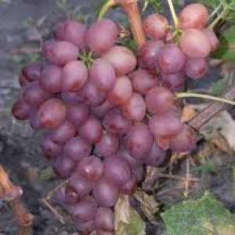
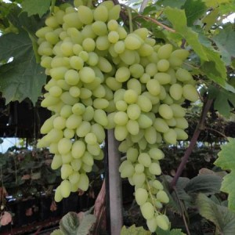

Какие сорта винограда распространены в Украине
Виноград – это волшебный дар природы, который приносит не только материальный доход, но и моральное удовлетворение. Общение с природой придает человеку жизненную энергию и силы. Выращивание винограда – непростая задача, как может показаться на первый взгляд. Для успеха в этом деле нужны знания, они дают возможность правильно выбрать необходимые сорта винограда, подобрать участок, посадить и вырастить виноград.
Если учитывать особенность винограда моментально приспосабливаться к различным условиям окружающей среды и изменять свои признаки, возникла необходимость подразделять сорта по разным критериям: по урожайности, срокам созревания, устойчивости против болезней и морозоустойчивости.
ЛУЧШИЕ УКРАИНСКИЕ СОРТА ВИНОГРАДА
СТОЛОВЫЕ СОРТА
Аркадия – является самым популярным сортом винограда на Украине, раннего созревания — 115 дней. Отличается большой урожайностью, с одного куста 20 кг. Ягоды округлые весом 15 грамм, гроздь этого сорта весит не менее 1 кг, цвет винограда янтарный. На вкус очень сладкий, сахаристость ягоды составляет 16 %. Не выдерживает сильных морозов, только до -22 градусов, поэтому на зиму его нужно накрывать. Зато сорт устойчив ко всем заболеваниям.
Ливия — гибридный сорт винограда, сверхраннего созревания — 105 дней. Гроздь крупная имеет цилиндрическую форму, минимальный вес 500 г. Ягода овальной формы имеет розовый окрас, весом 10 г. На вкус сладкий с мускатным легким привкусом, сахаронакопление – 17%. Высокие показатели урожайности с 1 куста – 40 кг. Сорт высоко устойчив к болезням. Морозоустойчивость слабая до — 20 °С.
